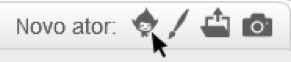

Gravar sons
Se você tiver um microfone, você pode gravar seus próprios sons. Clique em  para escolher um novo ator:
para escolher um novo ator:

Clique no ícone do microfone  para gravar seus próprios sons. Faça um som como 'meep', 'bop', ou 'zap.'
para gravar seus próprios sons. Faça um som como 'meep', 'bop', ou 'zap.'
Diminua o som para que ele fique do tamanho de uma única sílaba. Para diminuir, selecione a parte para exclusão e pressione a tecla ‘delete’.
Clique no ícone  novamente para gravar outro som.
novamente para gravar outro som.